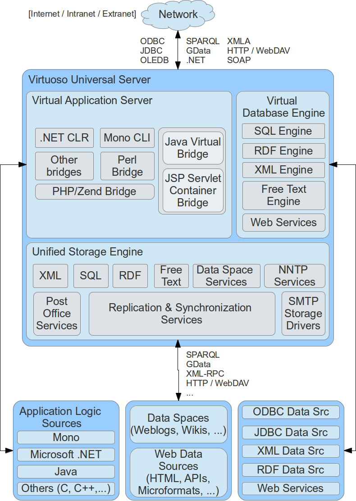
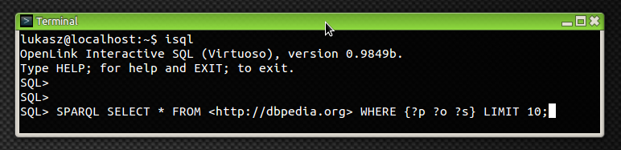
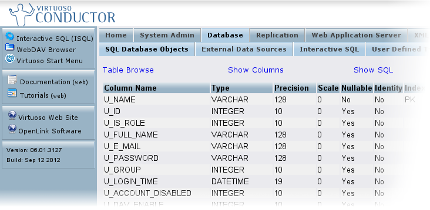

Your browser doesn't support the features required by impress.js, so you are presented with a simplified version of this presentation.
For the best experience please use the latest Chrome, Safari or Firefox browser.
Guidelines for using OpenLink Virtuoso as the database engine
for Semantic Web applications
Master Thesis
September 24, 2012
Łukasz Andrzej Grądzki
Supervised by Jesús Bermúdez de Andrés, Ph.D.
- Motivation
- Linked Data Principles
- Competing Solutions
- Overview of OpenLink Virtuoso
- Key Features
- Internal Structure
- Interfaces
- Practical Applications
- Data retrieval with Virtuoso Sponger
- SPARQL Queries
- Performance Assessment
- Real Use Cases
- Conclusions
Increasing popularity of Virtuoso
The lack of the definite guide for this software
What is the Semantic Web?
What technologies is it based on?
RDF - The Resource Description Framework:
- Universal data model
- Builds up the web of data
- Typed connections
- A specification of the meta-data model
- Information is represented as node-and-arc-labelled directed graphs
- A triple: { subject, predicate, object }
- Types of the RDF links:
- Relationship links
- Identity links
- Vocabulary links
- RDFS (RDF Schema) is a serialization standard intended to structure RDF resources
Ontologies:
- Don't have a universally accepted definition
- "An ontology is a formal specification of a shared conceptualization" by Tom Gruber
- A formal representation of a knowledge domain
- Composed of sets of concepts and relations between them
The SPARQL Protocol:
- Standardized query language for RDF graphs
- Based on the key words similar to the ones known from SQL
- SPARQL queries attempt to match patterns in the data web graph
How does an exemplary RDF triple look like?
<http://dbpedia.org/resource/Mount_Blackwood> <http://dbpedia.org/property/location> <http://dbpedia.org/resource/Australia>
"In RDF information is represented as node-and-arc-labelled directed graphs."

Virtuoso is not the only system that provides storage and processing functions of
the RDF data
- A JAVA framework
- The commandline interface
- Supports RDF, RDFS, OWL and SPARQL queries
- Provides an API for the storage and queries
- Optional SPARQL end-poind after installation of Fuseki server
- A JAVA framework
- The commandline & Web interfaces
- Provides RESTful HTTP for accessing RDF data
- Data can be queried using SPARQL & SeRQL
- Plug-ins for PERL, Python, Ruby, .NET, etc.
- A commercial RDF management platform with the RDF triples repository
- Suppotrs RDF, RDFS, OWL standards
- Good interference performance, especially the parallel inference on multi-core or multi-CPU architectures
- Includes mechanisms for semantic indexing of unstructured documents
- Data versioning
- Key features
- Internal structure
- Interfaces
- The hybrid architecture
- Supported formats: XML, RDF, RDFS, SPARQL
- RDF Sponger
- SPARQL endpoint
- Transparent access to heterogeneous data
- Supports the management and integration of the processes (BPEL)
- Web application server
- Remote data APs over WebDAV, SOAP, XML-RPC, etc.
What is the internal structure of Virtuoso?

- Commandline interface
- Serves for executing scripts and queries, locally and remotely
- Automatization tool: can execute statements given as arguments or loaded from file

- Web based UI and an administration tool
- Provides access to most of Virtuoso's functionalities and configuration options

Data retrieval from Internet Movie Database (IMDb) using Sponger
SPARQL queries on the generated RDF data
Two benchmarks applied:
The synthetic dataset: LUBM
- The Lehigh University Benchmark
The real dataset: DBPSB
- The DBpedia SPARQL Benchmark
- An ontology describing a university structure
- The synthetic OWL data based on the Univ-Bench ontology
- Triples reference departments, faculties, students, etc and the relationships between them
- Executes 3 types of the testing queries, each with different inference:
open coded as unions, performed at the run-time, defined as the entailed triples
- Data loading Performance factor (DLP):
9000-10 000 triples per second
- The times of data loading and the execution of the queries are directly proportional to the number of triples that are processed
- The fastest is the inference mechanism based on
the entailed triples
- A pure RDF benchmark based on actually posed queries
- Applied to the DBpedia knowledge base
- Executes the most frequent queries that were built in a 3-month period of time
- Official web page contains the performance comparison of all popular triplestores.
- Data loading Performance factor (DLP):
247 triples per second
- 14/24 (58%) queries were time-outed on the testing machine
- loading process of the real data is almost 40 times slower than in case of the similar, synthetic triples.
Which are the real applications of Virtuoso ?
- Reporting, Patient records
- Health Care Informatics
- Protein interaction, bio-pathway analysis
- Financial and enterprise applications
- Threat analysis, asset tracking
- RDF as a basic data model for representing data
- Virtuoso - a great number of functions integrated into one complex platform
- Suited for large systems
- Support for a wide range of Semantic Web standards, great performance
- Semantic Web is actively redefining the Internet towards new standards of Web 3.0
Thank you for your attention.
Do you have any questions?